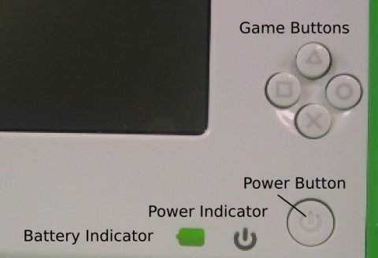

Resetting to Factory Defaults
Warning: EVERYTHING on your XO will be deleted if you use a USB storage device and the following method to reflash your XO's flash memory.
With Internet connectivity, you can prepare yourself to reflash (restore) an XO to its factory-default settings. This procedure is called a "clean-install" and is described in more detail at http://wiki.laptop.org/go/Clean-install_procedure. (Software updates can be delivered by clean-installing or by other means.)
Clean-installing works by completely reformatting your XO with a software image stored on a USB storage device.
Before you begin
You will need:
- A USB storage device that has at least 1 GB of space free
- A computer with fast Internet access (this should allow you to download the required 300-400MB within about an hour)
Preparing your USB Storage Device
- Download the OS image and its 'fs.zip' file to your local computer. These are compressed files, so DO NOT open them — instead, in your browser, visit the following two pages and follow their instructions:
- Copy the resulting files onto your clean (FAT or FAT32-formatted, not quick-formatted) USB storage device.
- Your USB storage device should now contain exactly two files named something like: enxxx-n.img and fs.zip. (On some operating systems, the '.img' and '.zip' extentions may be hidden.)
- These files should occupy a total of at least 300 MB of space.
- Unmount the USB storage device and disconnect it from your computer when it is safe to do so.
You have now prepared yourself to restore the factory-default settings which are current at this time.
Reinstalling your XO's Operating System
- Turn off your XO.
- Connect your prepared USB storage device to your XO.
- Next, hold down all four gamepad keys above the power button, and then push the power button to turn the XO on. You will see a message that tells you to "Release the game key to continue". Do not continue until you see this message.
- Release the gamepad keys. The reflash process runs automatically; first you will see the XO arrange and color in a grid of boxes, then the XO will display "Rebooting in 10 seconds..." The XO will then restart with a clean image.
- Enter your name for your XO and then click Next.
- Click the XO icon to change the colors and then click Done.
- Optionally, connect your XO to the Internet, then use the Control Panel to download the latest Activities.
If something goes wrong
If you see a "Bad hash at eblock #0" message while reflashing your XO, then it means the image you copied to the USB storage device is corrupt. You should repeat the preparation steps, perhaps with a different USB storage device, and then retry the reinstallation step.
Advanced: Changing the XO's Operating System
After you become comfortable with the procedure for restoring your XO to its factory-default settings, you might decide to change, upgrade, downgrade, or altogether replace your XO's operating system. There are several ways to accomplish this goal, all of which are discussed at http://wiki.laptop.org/go/Change_your_OS. Some of these mechanisms (such as olpc-update and others) may be more bandwidth-efficient and easily undoable.
Author : HowToFlash
© Anne Gentle 2008
Modifications:
adam hyde 2008
Brian Jordan 2008
A Holt 2008
Michael Stone 2008
Mitch Bradley 2008
License : General Public License